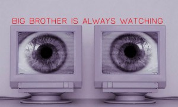
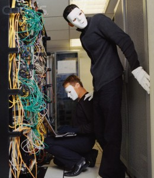

The Art of Looking Busy

{kind=link}

Chances are if you work in an office environment you are always being watched to make sure you aren't surfing the net or making personal phone calls or doing anything that could be categorized as slacking off.
Slacking off can be very rewarding, but it can also be very dangerous. If you aren't careful about it it could cost you your job.
Maybe your job is too easy and you finish most of your work in the first 2 hours of the day and you have 6 hours of free time, and you aren't an idiot and do not want to alert management to the fact that you could use some extra work. Or your job doesn't pay as much as you think you should get paid so you only do as much as you get paid for so you find yourself with a lot of extra time on your hands.
What do you do?
No matter how you fill your time at work, the key is to always look busy.
Here are 12 Tips you can't live without:
1. ALWAYS LOOK ANNOYED AND BE SHORT WITH PEOPLE WHEN THEY APPROACH YOU.
It shows you are into your work and don't like to be distracted from it because work is all important to you.
{kind=link}
2. TALK TO YOURSELF.
Not only does it show people that you are totally focused on your work, it always says you could be potentially crazy. People will steer clear of a crazy person and you can go about pretending to be busy without distraction.
{kind=link}
3. PLAN AHEAD.
Fucking off takes a little work, plan ahead and pay attention to details.
4. HAVE EYES IN THE BACK OF YOUR HEAD.
While you are busy with your non work you must still be aware of your surroundings. Set up your desk so that passersby have a difficult time seeing what's on your computer screen. Position shiny things such as frames pictures or wall pockets so that you can see people coming up behind you. Darker colored wall pockets work far better than the clear ones.
5. ALWAYS LOOK FAR TOO BUSY TO APPROACH. BUSY BORDERING ON HOMICIDAL.
People will steer clear of your desk and think twice before asking you for shit.
{kind=link}
6. HIRE MIMES TO COME FUCK UP YOUR SERVER.
It will keep management from paying attention to you and your marathon session of spider solitaire.
{kind=link}

7. ALWAYS CARRY PROPS.
This is probably the most important tip.
If you are away from your desk carry something like a few files or memos, clipboards are also very effective. You can also pretend to read them and talk to yourself a little. Make sure that it is a work related item.
If you are at your desk playing solitaire, or reading some crazy shit from project Gutenberg make sure you spread some files around and hold a page in your hand or a pen while you type. You should also leave a folder open on your lap while your reading Chekhov on your monitor.
{kind=link}
8. KEEP YOUR DESK MESSY
Your desk should be messy during business hours then clean it up at the end of the day. It shows you have lots of work but you are organized, and you never leave unfinished business. It also makes it very hard for people to tell what you are doing.
{kind=link}
{kind=link}
9. 1-800 NUMBERS
Assemble a list of 1-800 numbers that have automated messages. You can dial them up and avoid doing shit and look busy when the boss comes to you for something. You can listen to pre-recorded messages about informative shit like tourism and cancer all day. Most times they will see you are on the phone and come back later. Sometimes they stand there and wait for you to get off the phone, this can be awkward what I like to do is say, "What the heck the voice mail is full?" Then you just hang up and look at your boss or whoever it is and say something like, " I guess I'll just have to fax an invoice over. Sorry about that, what do you need?" 1-800-4cancer is a personal favorite. They have lots of options so you can press lots of buttons and they update their messages regularly.
{kind=link}
10. BURN A CD
Download some fascinating shit to read; like project Gutenberg, it has a giant catalog. Once you find something to read, make sure to change all the text to something uniform like times new roman 12 point font, then name all the files after work files and burn them to CD. This way it won't draw attention from passersby, they will just assume you are hard at work.
{kind=link}
11. TAKE A NAP.
Personally I look forward to taking a nap in my car everyday at lunch. Sometimes you can't wait until then. So you can set your cellphone alarm and take a ten minute nap in the bathroom
{kind=link}
This one I cannot stress enough.
12. STAY AWAY FROM THE WATER COOLER!
Whatever you do, not matter how alluring it may seem stay away from the water cooler. No good can ever come from it, it is clearly a non work area and management knows this.
{kind=link}
Good luck People! Be smart and plan ahead.
Related posts
Amazon to Launch New Service That Will Allow Customers to Buy Products Just by Looking at Them
SEATTLE, WA—In a move that is sure to shake up the retail industry, Amazon announced today that it will be…

Comments